|
 |
 |
A Manual for use of PyPedal
A software package for pedigree analysis |
 |
 |
 |
7.4.1 Inbreeding and Related Measures
Coefficients of relationship (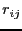
) and inbreeding (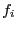
) are calculated using the method of Wiggans et al. ref337. An empty dictionary is created to store animal IDs and coefficients of inbreeding. For each animal in the pedigree, working from youngest to oldest, the dictionary is queried for the animal ID. If the animal does not have an entry in the dictonary, a subpedigree containing only relatives of that animal is extracted and the coefficients of inbreeding are calculated and stored in the dictionary. A second dictionary keeps track of sire-dam combinations seen in the pedigree. If a full-sib of an animal whose pedigree has already been processed is encountered the full-sib receives a COI identical to that of the animal already processed. This approach allows for computation of COI for arbitrarily large populations because it does not require allocation of a single NRM of order 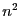
, where 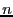
is the size of the pedigreed population. In most cases, the NRM for a subpedigree is on the order of 200, although this can vary with species and population data structure.
Average and maximum coefficients of inbreeding are computed for the entire population and for all individuals with non-zero inbreeding. The average relationship among all individuals is also computed. Theoretical and realized effective population
sizes, 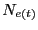
, and 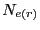
, were estimated as [Falconer and MacKayFalconer and
MacKay1996]:
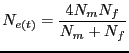
and
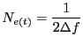
where 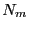
and  are the number of sires and dams in the population, respectively, and 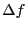
is the change in
population average inbreeding between generations t and t+1. Interpretation of
can be
problematic when
is calculated from incomplete or error-prone pedigrees.
are the number of sires and dams in the population, respectively, and 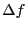
is the change in
population average inbreeding between generations t and t+1. Interpretation of
can be
problematic when
is calculated from incomplete or error-prone pedigrees.
Release 2.0.3, documentation updated on November 29, 2005
Revised May 15, 2012.
See About this document... for information on suggesting changes.